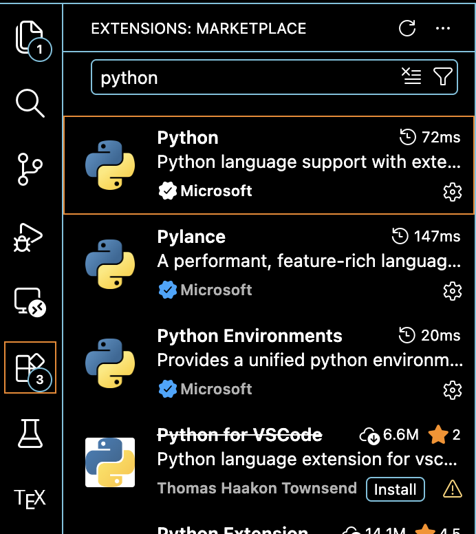
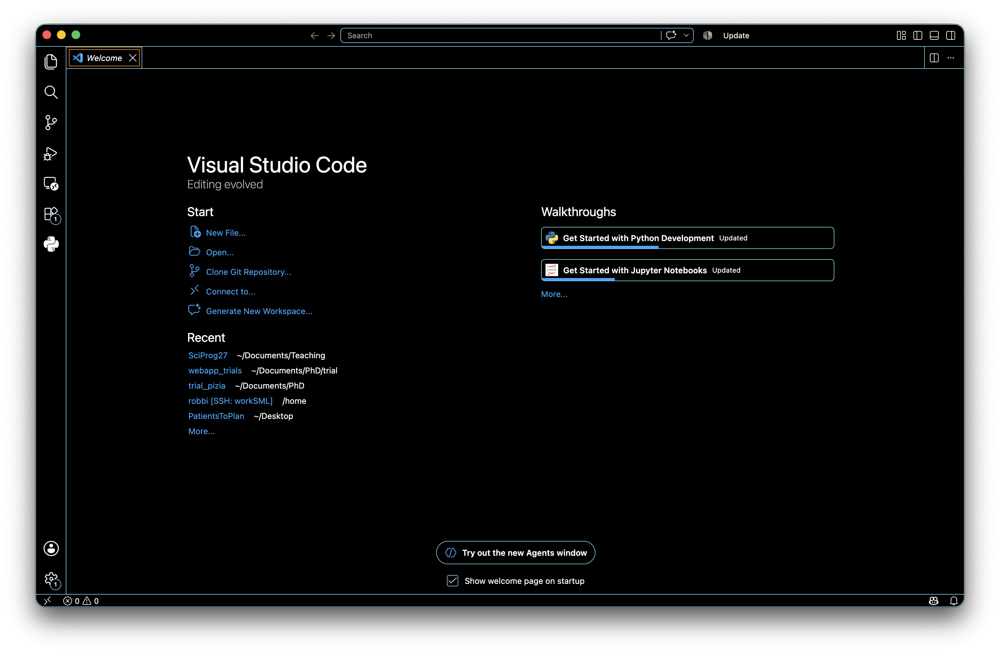
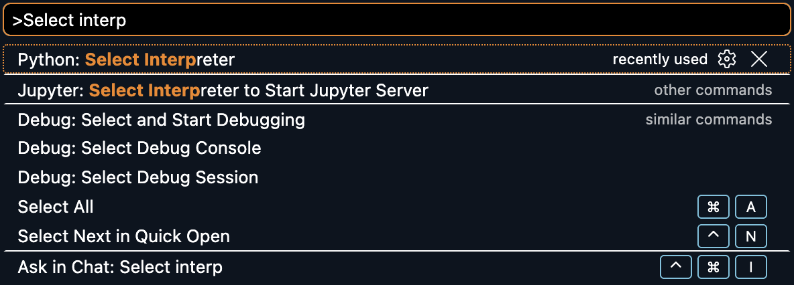
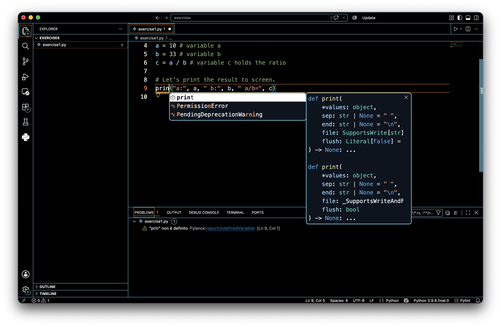
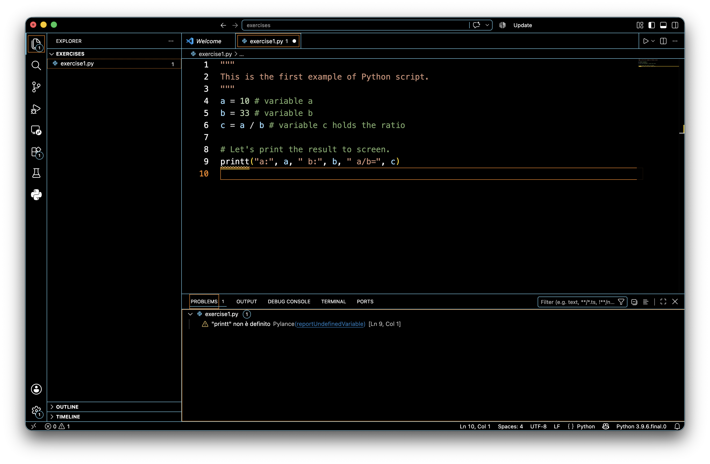
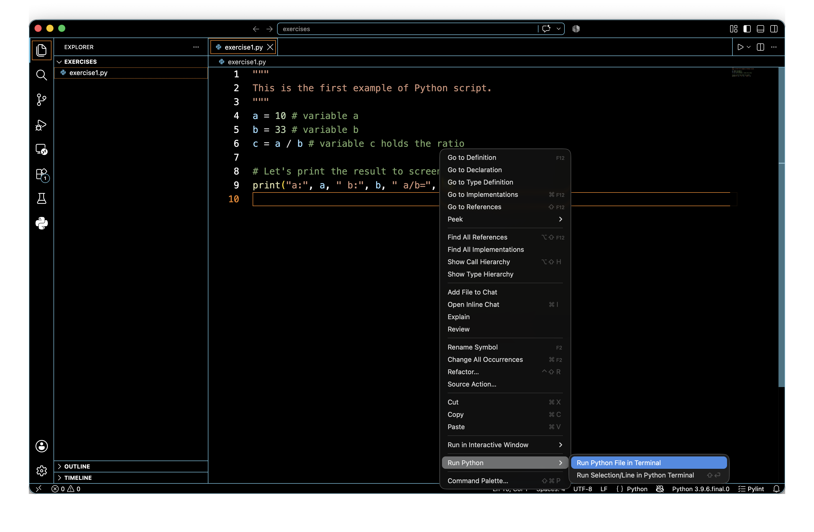

Installation#
Getting the tools#
You will need to install several pieces of software to get a working Python 3 programming environment. In this section we will install everything that we are going to need in the next few weeks.
There are many ways to write and execute Python code:
Python interpreter (command line)
Visual Studio Code (editor, good debugger)
Jupyter (notebook, good for experimentation and writing reports)
Google Colab (online, sort-of collaborative)
Python Tutor (online, visual debugger, only for short code)
Python 3 is available for Windows, Mac and Linux. Python3 alone is often not enough, and you will need to install extra system-specific libraries + editors like Jupyter or Visual Studio Code
To avoid hassles, I suggest installing Python through Miniconda and using Visual Studio Code as the main code-editor.
Below there are the steps to follow:
Install Miniconda, which provides a minimal Python environment managed by Conda, with little manual setup required.
Install Visual Studio Code, which is available for all platforms. You can read about it here. Downloads for all platforms can be found here
Install Python extension for Visual Studio Code by Microsoft

Creating and Using a Python environment with Miniconda#
Once Miniconda is installed, it is recommended to create a separate Python environment for each project. This keeps the dependencies of different projects isolated and avoids conflicts between Python packages.
Open Anaconda Prompt on Windows, or a Terminal on Mac/Linux.
Create a new environment with Python installed. For example, to create an environment called
sciprogwith Python 3.11:conda create -n sciprog python=3.11
Activate the environment:
conda activate sciprog
Remember to always activate the environment before working!
You should now see
(sciprog)at the beginning of your terminal prompt, indicating that the environment is active.You can check that Python is correctly installed by running:
python --versionWhen you are finished working, you can deactivate the environment with:
conda deactivate
Visual Studio Code#
Visual Studio Code is an Integrated Development Editor (IDE) for text files. It can handle many languages, Python included (python programs are text files ending in .py).
Features:
open source
lightweight
used by many developers
Python plugin is not the best, but works enough for us
Once you open the IDE Visual Studio Code you will see the welcome screen:

You can find useful information on this tool here. Please spend some time having a look at that page.
Once you are done with it you can close this window pressing on the “x”.
First thing to do is to set the python interpreter to use. Click on View –> Command Palette and type “Python” in the text search space.
Select Python: Select Workspace Interpreter as shown in the picture below.

Finally, select the Python version you want to use i.e. Python3 (if you have Miniconda, it should automatically use your Miniconda environment)
Now you can click on Open Folder to create a new folder to place all the scripts you are going to create. You can call it something like “exercises”.
Next you can create a new file, example1.py (.py extension stands for python).
Visual Studio Code will understand that you are writing Python code and will help you with valid syntax for your program.
Add the following text to your example1.py file:
[1]:
"""
This is the first example of Python script.
"""
a = 10 # variable a
b = 33 # variable b
c = a / b # variable c holds the ratio
# Let's print the result to screen.
print("a:", a, " b:", b, " a/b=", c)
a: 10 b: 33 a/b= 0.30303030303030304
A couple of things worth nothing.
The first three lines opened and closed by """ are some text describing the content of the script. Moreover, comments are proceeded by the hash key (#) and they are just ignored by the python interpreter.
Please remember to comment your code, as it helps readability and will make your life easier when you have to modify or just understand the code you wrote some time in the past!
Also notice that Visual Studio Code will help you writing your Python scripts. For example, when you start writing the print line it will complete the code for you (if the Pylint extension is installed), suggesting the functions that match the letters written.
This useful feature is called code completion and, alongside suggesting possible matches, it also visualizes the parameters the function needs. Here is an example:

Save the file (Ctrl+S as shortcut).
It is convenient to ask the IDE to highlight potential syntactic problems found in the code. You can toggle this function on/off by clicking on View –> Problems. The Problems panel should look like this

Note that printt is actually underlined in red, meaning that there is an error which will cause the interpreter to stop the execution with a failure.
Please remember that before running any piece of code all errors must be fixed!

Upon clicking on Run Python File in Terminal a terminal panel should pop up in the lower section of the coding panel and the result shown above should be reported.
Saving script files like the example1.py above is also handy because they can be invoked several times (later on we will learn how to get inputs from the command line to make them more useful…).
To do so, you just need to call the python intepreter passing the script file as parameter. From the folder containing the example1.py script:
python3 example1.py
will in fact return:
a: 10 b: 33 a/b= 0.30303030303030304
Before ending this section, let me add another note on errors.
The IDE will diligently point you out syntactic warnings and errors (i.e. errors/warnings concerning the structure of the written code like name of functions, number and type of parameters, etc.) but it will not detect semantic or runtime errors (i.e. connected to the meaning of your code or to the value of your variables). These sort of errors will most probably make your code crash or may result in unexpected results/behaviours. In the next section we will introduce the debugger, which is a useful tool to help detecting these errors.
Before getting into that, consider the following lines of code (do not focus on the import line, this is only to load the mathematics module and use its method sqrt):
[2]:
"""
Runtime error example, compute square root of numbers
"""
import math
A = 16
B = math.sqrt(A)
C = 5*B
print("A:", A, " B:", B, " C:", C)
D = math.sqrt(A-C) # whoops, A-C is now -4!!!
print(D)
A: 16 B: 4.0 C: 20.0
---------------------------------------------------------------------------
ValueError Traceback (most recent call last)
Cell In[2], line 11
7 B = math.sqrt(A)
8 C = 5*B
9 print("A:", A, " B:", B, " C:", C)
10
---> 11 D = math.sqrt(A-C) # whoops, A-C is now -4!!!
12 print(D)
ValueError: math domain error
If you add that code to a Python file (e.g. sqrt_example.py), you save it and you try to execute it, you should get an error message as reported above. You can see that the interpreter has happily printed off the value of A,B and C but then stumbled into an error at line 9 (math domain error) when trying to compute \(\sqrt{A-C} = \sqrt{-4}\), because the sqrt method of the math module cannot be applied to negative values (i.e. it works in the domain of real numbers).
Please take some time to familiarize with Visual Studio Code (creating files, saving files etc.) as in the next practicals we will take this ability for granted.